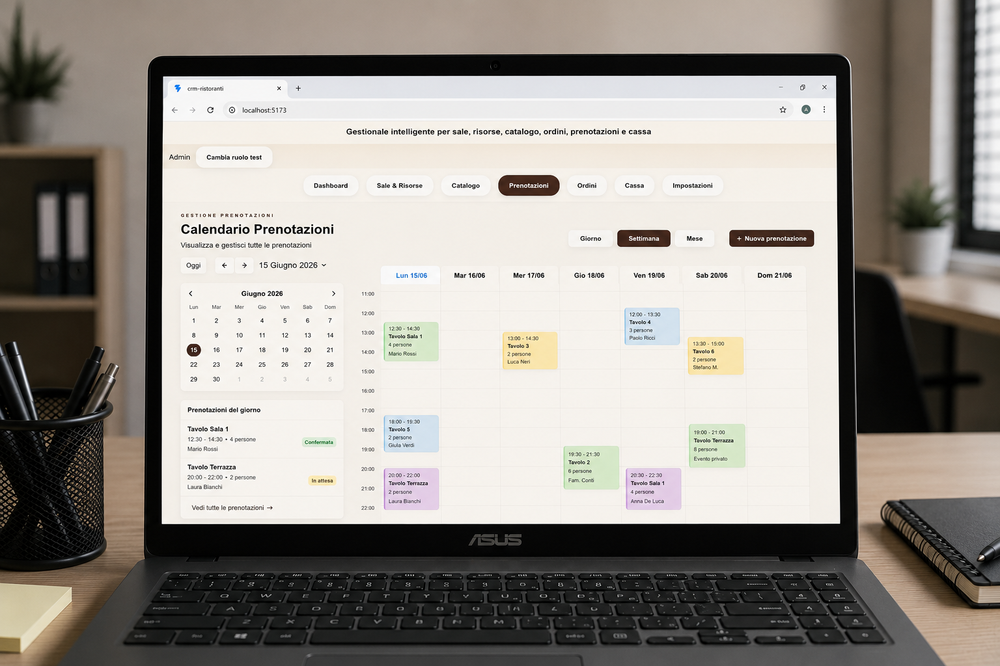
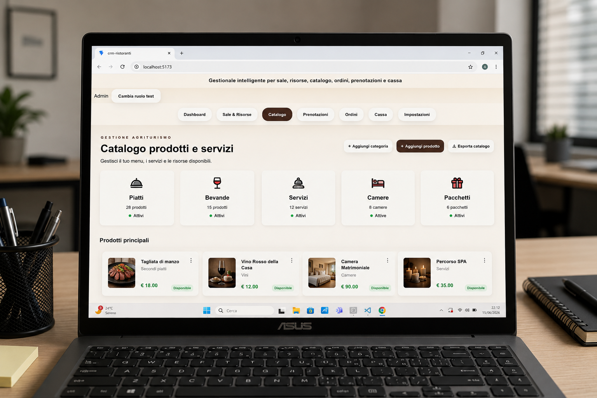
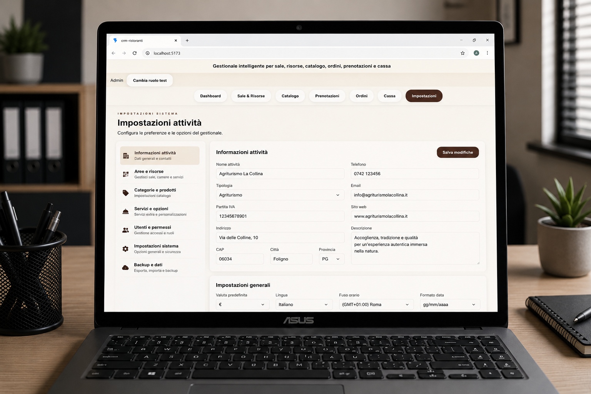
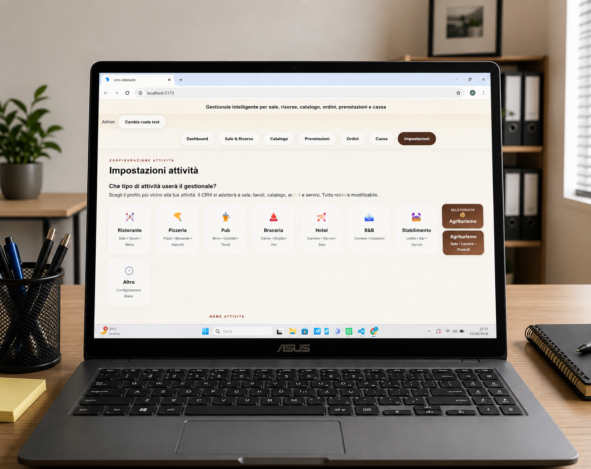

Organizzazione
Informazioni, risorse e operazioni raccolte all’interno dello stesso ambiente.
Sviluppiamo gestionali, CRM, siti web, applicazioni e sistemi personalizzati per semplificare il lavoro, organizzare le informazioni e migliorare il rapporto con clienti e collaboratori.
Non partiamo da un pacchetto standard. Osserviamo il modo in cui lavora l’attività e costruiamo una soluzione digitale coerente con le sue necessità reali.

La tecnologia deve alleggerire il lavoro, non aggiungere altra confusione.
Ogni funzione deve avere uno scopo concreto.
Un gestionale permette di raccogliere strumenti, informazioni e operazioni quotidiane all’interno di una sola piattaforma.
Può essere utilizzato per organizzare sale, tavoli, prenotazioni, risorse, servizi, ordini, clienti, appuntamenti, cataloghi e attività interne.
Ogni progetto può essere adattato al tipo di impresa, al numero di collaboratori e al modo in cui vengono svolte le operazioni.
L’obiettivo non è inserire più funzioni possibili, ma creare uno strumento chiaro, semplice e realmente utile.
Informazioni, risorse e operazioni raccolte all’interno dello stesso ambiente.
Una visione più chiara delle attività, degli appuntamenti e del lavoro svolto.
Sezioni, funzioni e percorsi costruiti sulle esigenze dell’attività.
Il sistema può essere ampliato nel tempo quando nascono nuove necessità.
Sale, tavoli, postazioni e risorse possono essere organizzati attraverso una rappresentazione semplice, immediata e adatta al lavoro quotidiano.
Le funzioni vengono scelte in base al settore e al modo in cui viene gestita l’attività.
Tavoli, sale, camere, postazioni o altre risorse possono essere visualizzati e gestiti rapidamente.

Le prenotazioni vengono ordinate per data, orario, cliente, servizio o risorsa.

Il catalogo permette di organizzare prodotti, piatti, servizi, categorie e prezzi.

Dati aziendali, ruoli, preferenze e modalità operative possono essere configurati in un’unica area.

Ristoranti, hotel, agriturismi, pub, stabilimenti, professionisti e altre attività possono utilizzare strutture e funzioni differenti.
Un CRM aiuta a organizzare il rapporto con clienti, potenziali clienti e collaboratori.
Può raccogliere dati di contatto, richieste, appuntamenti, note, preventivi, comunicazioni e stato delle trattative.
Il sistema può essere costruito intorno al processo commerciale reale dell’impresa, senza obbligarla ad adattarsi a strumenti troppo complessi.
Raccolta ordinata dei dati del cliente.
Stato della richiesta, note e appuntamenti.
Storico, servizi e rapporto nel tempo.
Ogni strumento può essere sviluppato singolarmente oppure collegato agli altri servizi di La Piramide.
Siti aziendali, landing page e pagine dedicate progettate per presentare l’attività e trasformare le visite in richieste concrete.
Sistemi per organizzare clienti, richieste, trattative, appuntamenti e comunicazioni.
Applicazioni web e strumenti interni sviluppati per risolvere esigenze specifiche.
Supporto nella gestione della presenza social, nella creazione dei contenuti e nell’organizzazione della comunicazione online.
Raccogliamo esigenze, problemi, operazioni e strumenti già utilizzati.
Organizziamo sezioni, percorsi, utenti e priorità del sistema.
Il progetto viene sviluppato gradualmente e controllato prima della pubblicazione.
Le funzioni possono evolvere insieme all’attività e alle sue nuove necessità.
Ogni attività ha processi, priorità e necessità differenti.
Inseriamo ciò che serve, evitando complessità inutili.
L’interfaccia deve essere comprensibile anche durante il lavoro quotidiano.
La soluzione può crescere insieme all’impresa.
Può trattarsi di un gestionale, un CRM, un sito web, un’applicazione o di un sistema che colleghi più strumenti.
Descrivici la tua attività, il problema che vuoi risolvere e il risultato che desideri ottenere.